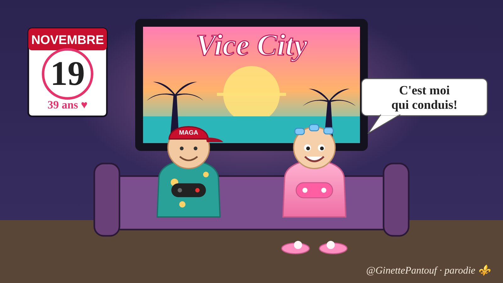

Chargement des caricatures…

Ginette Pantoufle
@GinettePantouf · parodie ⚜️
Ginette de MonRéal. Pas lu l'article, mais chu contre. La faute à Trump. Peut-être que l'humour allumera des lumières… ou juste vous fera rire.

Les personnages
Ginette
Ginette de MonRéal. Robe de chambre rose, bigoudis bleus, pantoufles roses à pompon. Debout pas avant 10 h. Endormie par le téléjournal de « Radio-Cadenas », mais cultivée : elle connaît les vrais faits et en tire toujours la mauvaise conclusion. Admire « mon beau M. Carney », a peur de PSPP, de Trump, de l'IA… et de presque tout.
Réal, mon mari
Marié à Ginette depuis le 19 novembre 1987. Chaise inclinable, chemise hawaïenne, casquette « MAGA FLORIDA », bière à la main. Gamer, fan de CNews et de croisières au départ de Miami. Vit surtout au sous-sol. Sa phrase fétiche : « C'est la télé qui te fait peur! »
Lise et la cousine
Lise, la sœur de Réal, passe l'hiver en Floride : Ginette lui reproche d'avoir « choisi Trump ». La cousine, elle, se fait bronzer à la plage pendant que Réal compte les condos.
Les running gags
- Le 19 novembre : 39 ans de mariage… et sortie de GTA 6. Réal a encerclé la date en rouge, pour le jeu.
- Le boycott de la Floride : Ginette boycotte la Floride de Trump ; Réal rêve de Miami et de Vice City.
- Le sous-sol : Réal y dort, y joue et y regarde CNews.
- Le congélateur : la cachette de Ginette pour son Rolodex, son dentier… et la console de Réal.
- « J'ai pas lu, mais… » : Ginette donne toujours sa source, sans jamais la lire.
- Le cours de Réal : pointeur en main, Réal devient « prof » de sociologie, de Floride, de jeux vidéo ou d'IA.
- Pantouf? Pantoute!